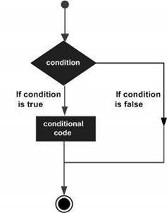

Decision making structures require the programmer to specify one or more conditions to be evaluated or tested by the program, along with a statement or statements to be executed if the condition is determined to be true, and optionally, other statements to be executed if the condition is determined to be false.
Following is the general form of a typical decision making structure found in most of the programming languages –

R provides the following types of decision making statements. Click the following links to check their detail.
|
Sr.No. |
Statement & Description |
|
1 |
if statement An if statement consists of a Boolean expression followed by one or more statements. |
|
2 |
if...else statement An if statement can be followed by an optional else statement, which executes when the Boolean expression is false. |
|
3 |
switch statement A switch statement allows a variable to be tested for equality against a list of values. |